An Open Science Approach
to Medical Evidence
Generation: Introducing
Observational Health Data
Sciences and Informatics
Jon Duke, MD MS
Regenstrief Institute
Academy Heath
June 14 2015
Slide Credits: Patrick Ryan

What is OHDSI?
•The Observational Health Data Sciences and
Informatics (OHDSI) program is a multi-
stakeholder, interdisciplinary collaborative
•The goal of OHDSI is to bring out the value of
observational health data through large-scale
analytics and evidence generation
•All our software and other products are
released as open-source
2
http://ohdsi.org
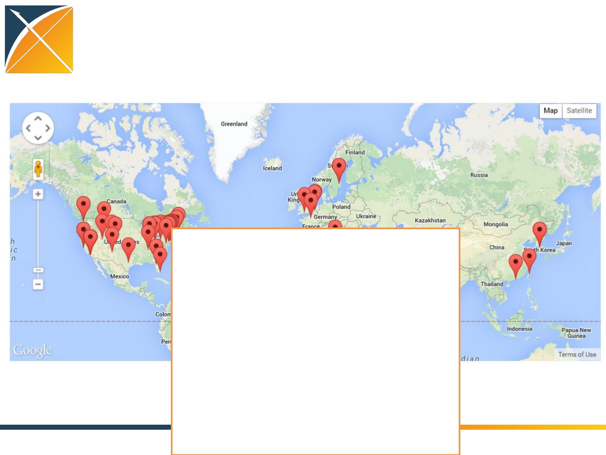
OHDSI: a global community
OHDSI Collaborators:
•>140 researchers in academia,
industry and government
•>10 countries
OHDSI Data Network:
•>50 databases standardized to
OMOP common data model
•>680 million patients

OHDSI Evidence Generation
•Clinical characterization:
–Descriptive statistics (e.g., natural history of a disease or
patterns of medication use)
–Quality improvement (e.g., performance measures)
•Population-level estimation
–Safety surveillance (e.g., identifying new adverse event
risks for drugs)
–Comparative effectiveness (e.g. comparing interventional
to non-interventional treatment of chronic back pain
•Patient-level prediction
–Incorporating patient medical history to provide
personalized recommendations for therapy selection,
adverse event risk, high value diagnostic studies
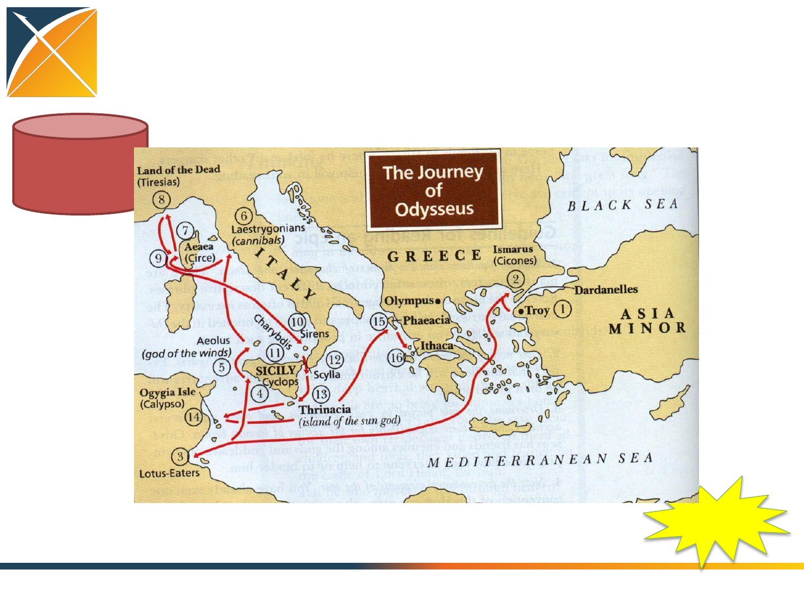
The odyssey to evidence generation
Patient-level
data in source
system/ schema
evidence

Open Science through Standardization
•The OHDSI community has standardized core
components of the research process in order to
–Promote transparent, reproducible science
–Reveal data quality issues
–‘Calibrate’ datasets
–Bring skillsets together from across the community
(clinical, epi, stats, compSci)
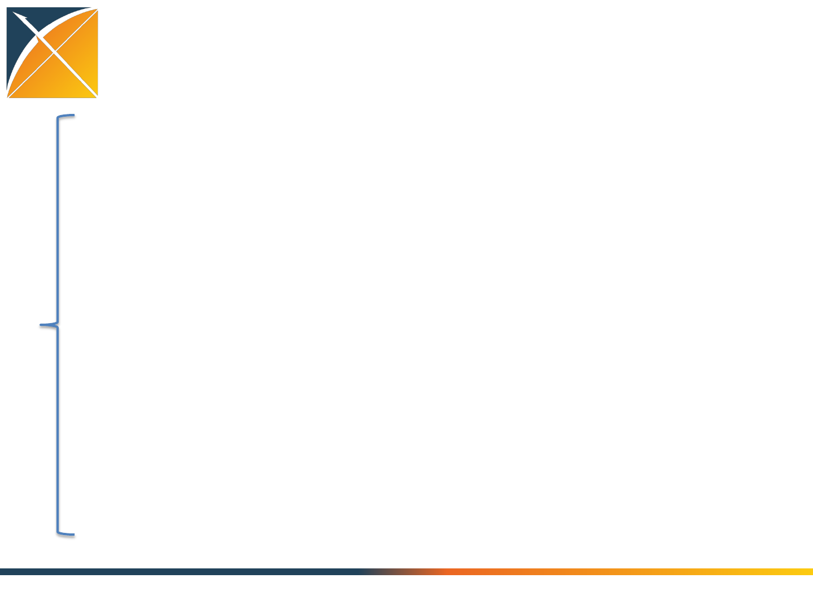
Opportunities for standardization in the
evidence generation process
•Data structure : tables, fields, data types
•Data content : vocabulary to codify clinical domains
•Data semantics : conventions about meaning
•Cohort definition : algorithms for identifying the set of
patients who meet a collection of criteria
•Covariate construction : logic to define variables
available for use in statistical analysis
•Analysis : collection of decisions and procedures
required to produce aggregate summary statistics from
patient-level data
•Results reporting : series of aggregate summary
statistics presented in tabular and graphical form
Protocol
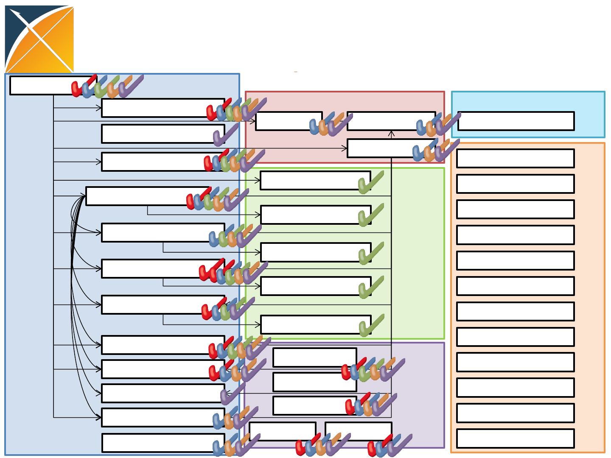
Concept
Concept_relationship
Concept_ancestor
Vocabulary
Source_to_concept_map
Relationship
Concept_synonym
Drug_strength
Cohort_definition
Standardized vocabularies
Attribute_definition
Domain
Concept_class
Cohort
Dose_era
Condition_era
Drug_era
Cohort_attribute
Standardized
derived elements
Standardized clinical data
Drug_exposure
Condition_occurrence
Procedure_occurrence
Visit_occurrence
Measurement
Procedure_cost
Drug_cost
Observation_period
Payer_plan_period
Provider
Care_site Location
Death
Visit_cost
Device_exposure
Device_cost
Observation
Note
Standardized health system data
Fact_relationship
Specimen
CDM_source
Standardized meta-data
Standardized health
economics
Drug safety surveillance
Device safety surveillance
Vaccine safety surveillance
Comparative effectiveness
Health economics
Quality of care Clinical research
One model, multiple use cases
Person
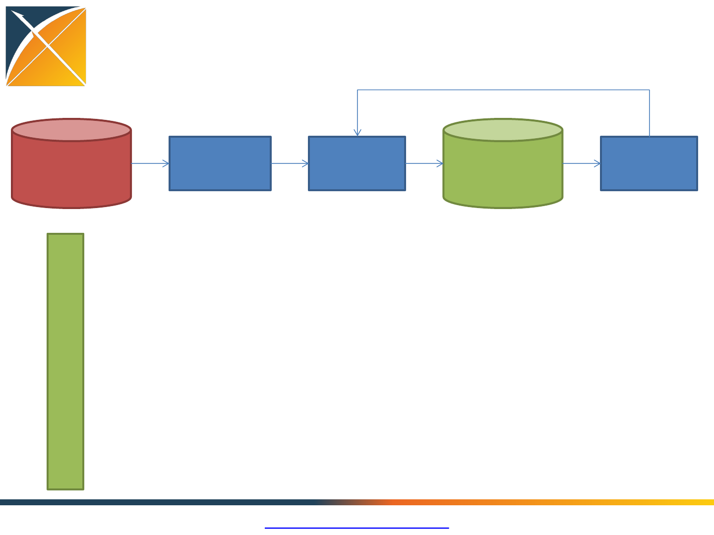
Preparing your data for analysis
Patient-level
data in source
system/ schema
Patient-level
data in
OMOP CDM
ETL
design
ETL
implement ETL test
WhiteRabbit:
profile your
source data
RabbitInAHat:
map your source
structure to
CDM tables and
fields
ATHENA:
standardized
vocabularies
for all CDM
domains
ACHILLES:
profile your
CDM data;
review data
quality
assessment;
explore
population-
level summaries
OHDSI tools built to help
CDM:
DDL, index,
constraints for
Oracle, SQL
Server,
PostgresQL;
Vocabulary tables
with loading
scripts
http://github.com/OHDSI
OHDSI Forums:
Public discussions for OMOP CDM Implementers/developers
Usagi:
map your
source codes
to CDM
vocabulary
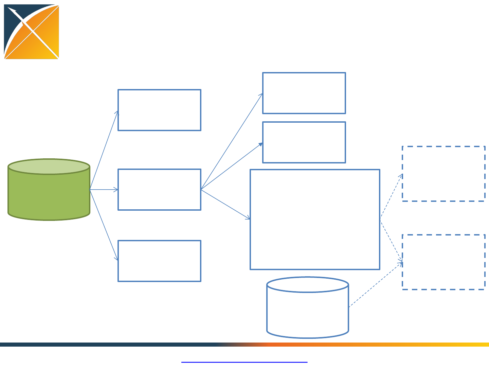
Standardized large-scale analytics tools
under development within OHDSI
Patient-level
data in
OMOP CDM
http://github.com/OHDSI
ACHILLES:
Database
profiling
CIRCE:
Cohort
definition
HERACLES:
Cohort
characterization
OHDSI Methods Library:
CYCLOPS
CohortMethod
SelfControlledCaseSeries
SelfControlledCohort
TemporalPatternDiscovery
Empirical Calibration
HERMES:
Vocabulary
exploration
LAERTES:
Drug-AE
evidence base
HOMER:
Population-level
causality
assessment
PLATO:
Patient-level
predictive
modeling
CALYPSO:
Feasibility
assessment

OHDSI Software
•Community developed
•Apache 2.0 licensed
•Available on GitHub
•Common frameworks
–Java
–HTML5 / Javascript
–R
–Oracle / SQL Server / Postgres / Redshift / Netezza
Motivating example to see the
OHDSI tools in action
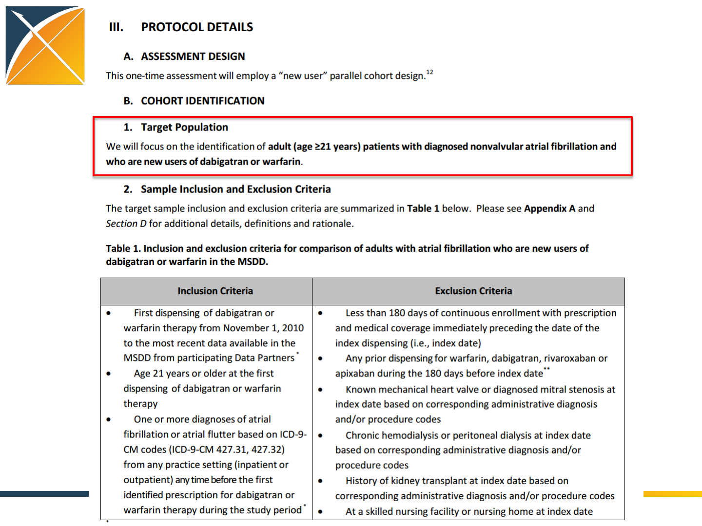
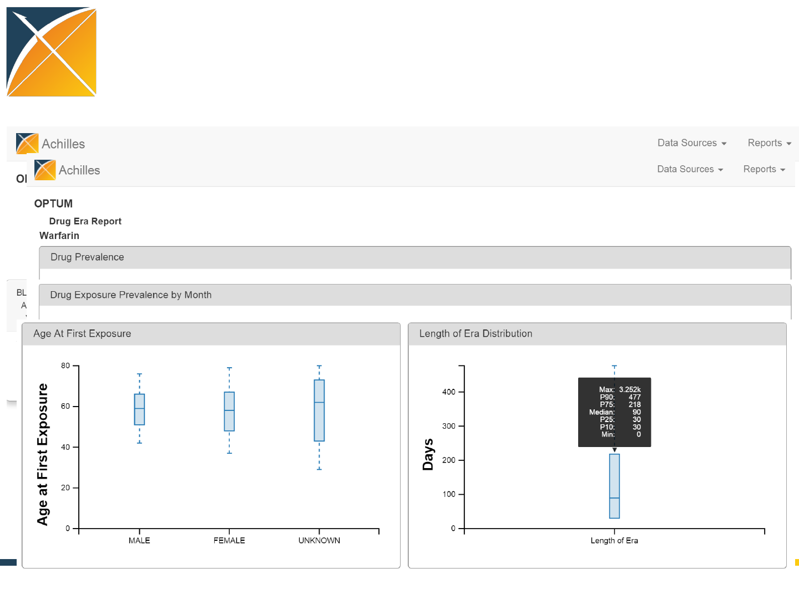
Use ACHILLES to see if the databases have the
required data elements
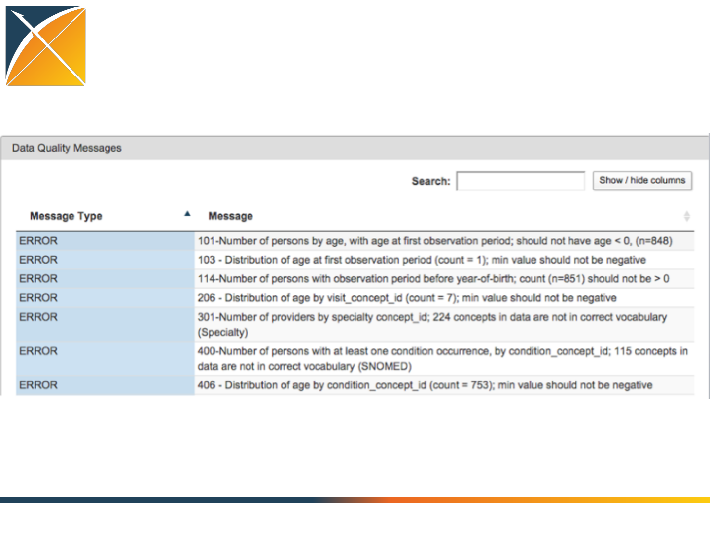
Also use ACHILLES to check for any
data quality issues
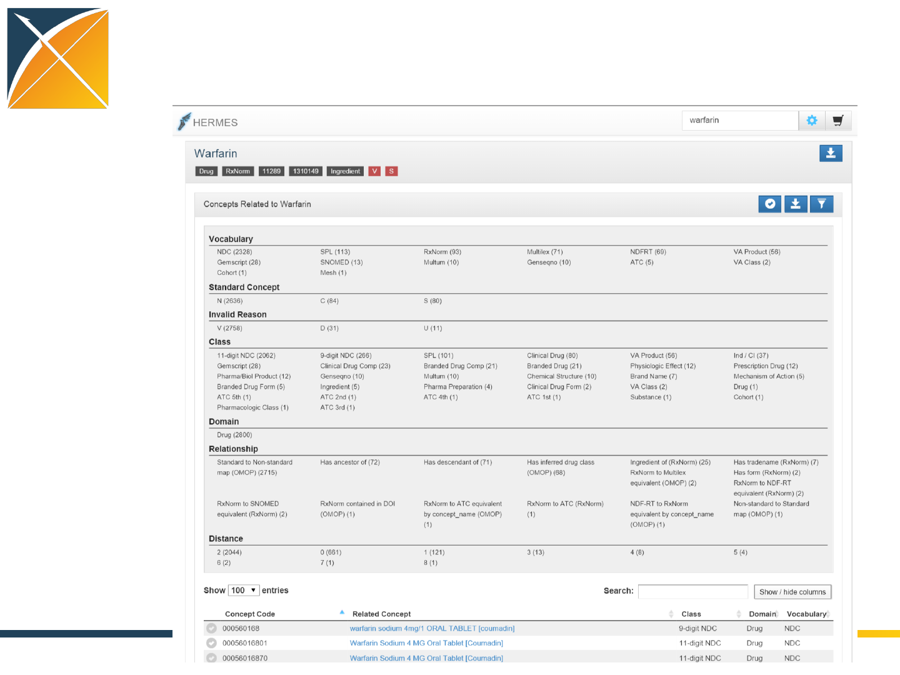
Use HERMES to figure out how to find a particular
condition, drug, procedure, or other concept
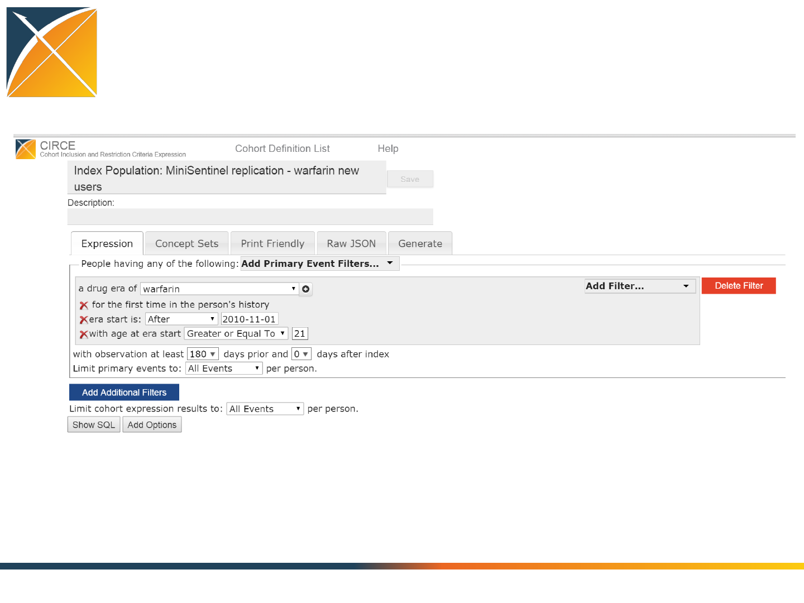
Use CIRCE to define the cohort of
interest
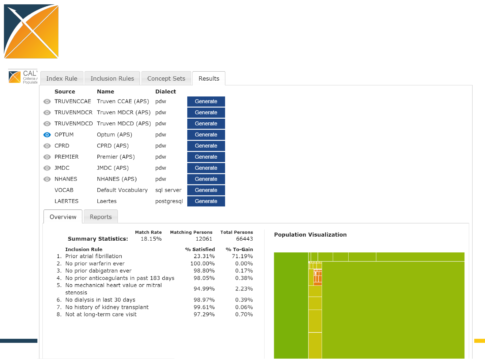
Use CALYPSO to conduct feasibility assessment to
evaluate the impact of study inclusion criteria
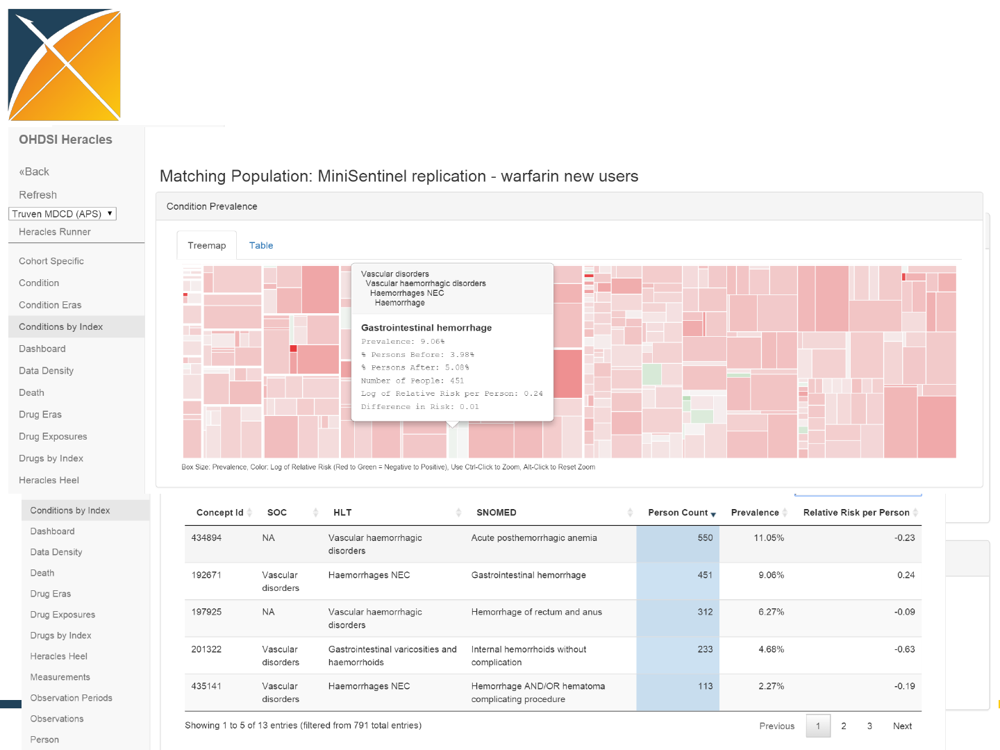
Use HERACLES to characterize the
cohorts you developed
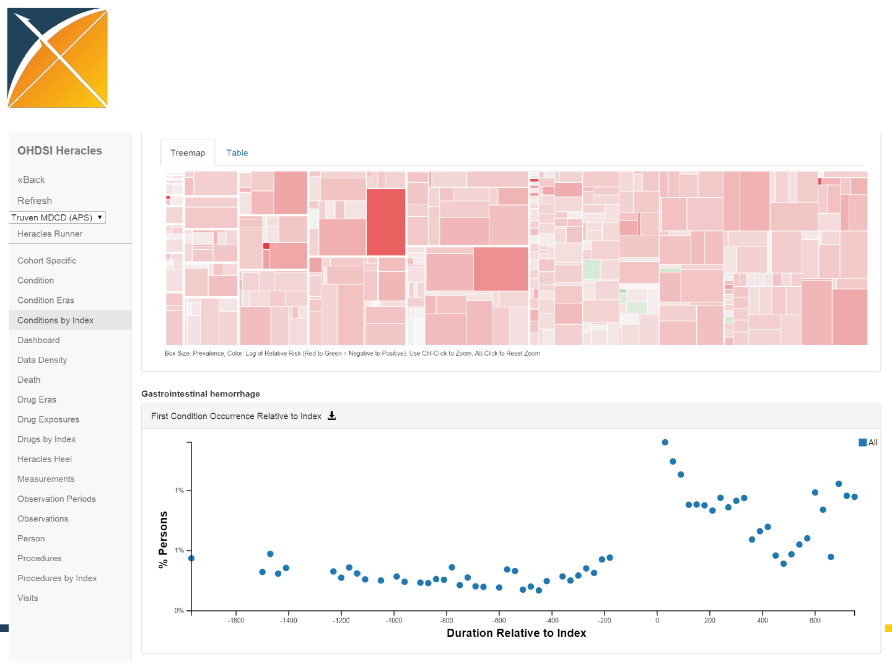
Use HERACLES to characterize the
cohorts you developed
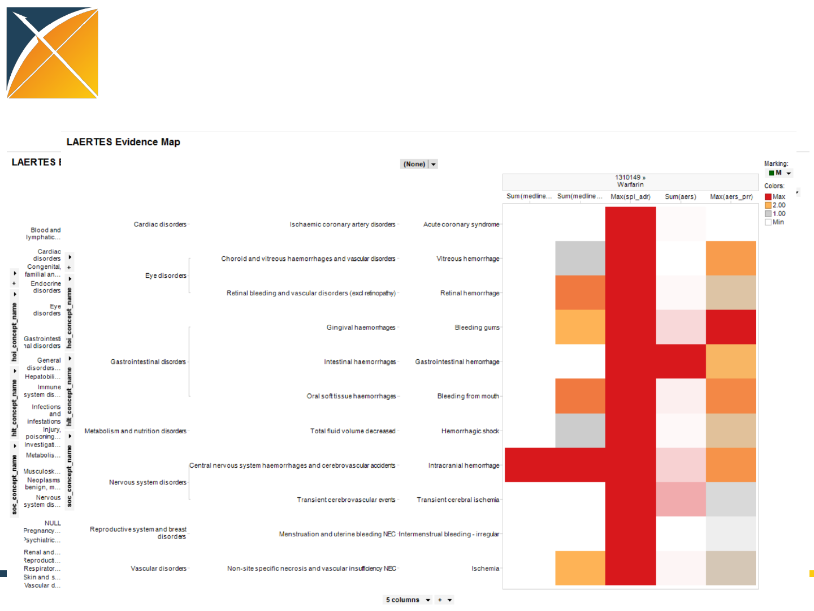
Use LAERTES to summarize evidence from
existing data sources
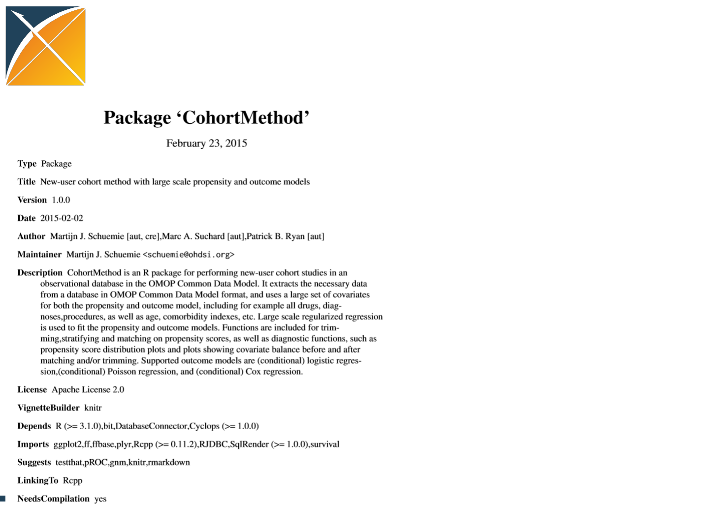
Open-source large-scale analytics
through R
Why is this a novel approach?
•Large-scale analytics,
scalable to ‘big data’
problems in healthcare:
•millions of patients
•millions of covariates
•millions of questions
•End-to-end analysis, from
CDM through evidence
•No longer de-coupling
‘informatics’ from
‘statistics’ from
‘epidemiology’
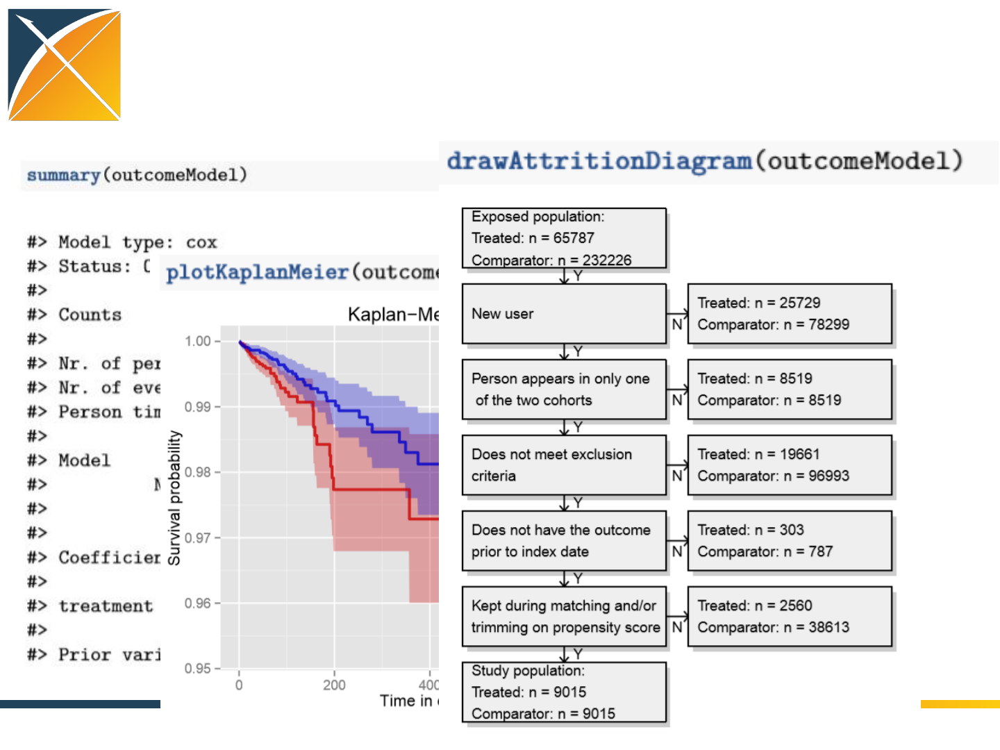
Standardize Analysis and Results
Reporting

Concluding Thoughts
•Open science requires optimized technical
infrastructure, community infrastructure, and
dedication
•But open science is not charity!
–The payoff can be both for individual participants
and the community
•A diversity of skillsets brings value to all and
greatly accelerates generation of high quality
evidence
Join the journey
Interested in OHDSI?
Questions or comments?
Contact:
jonduke@regenstrief.org
29